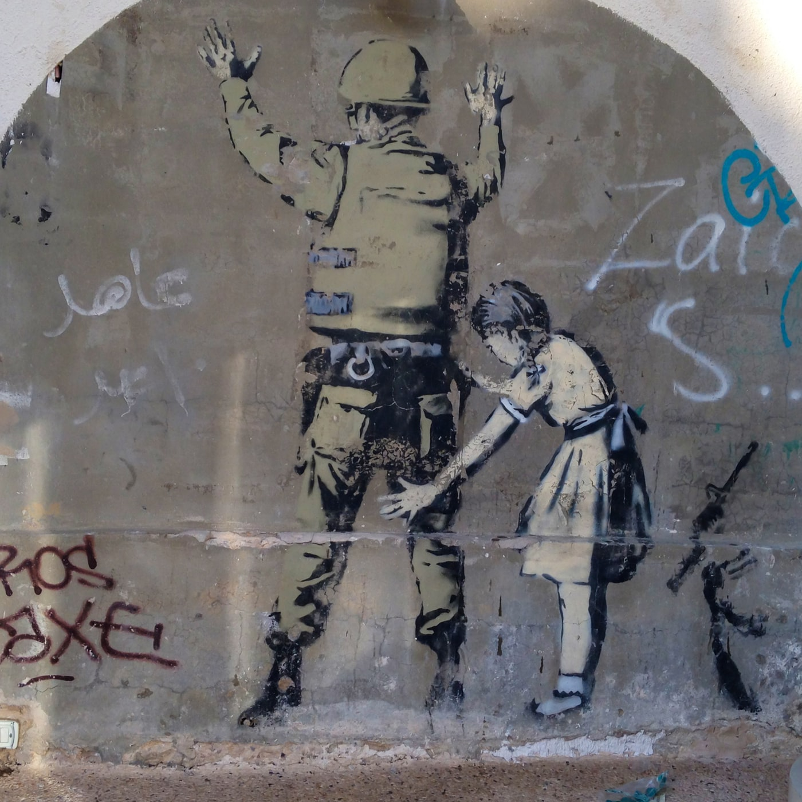
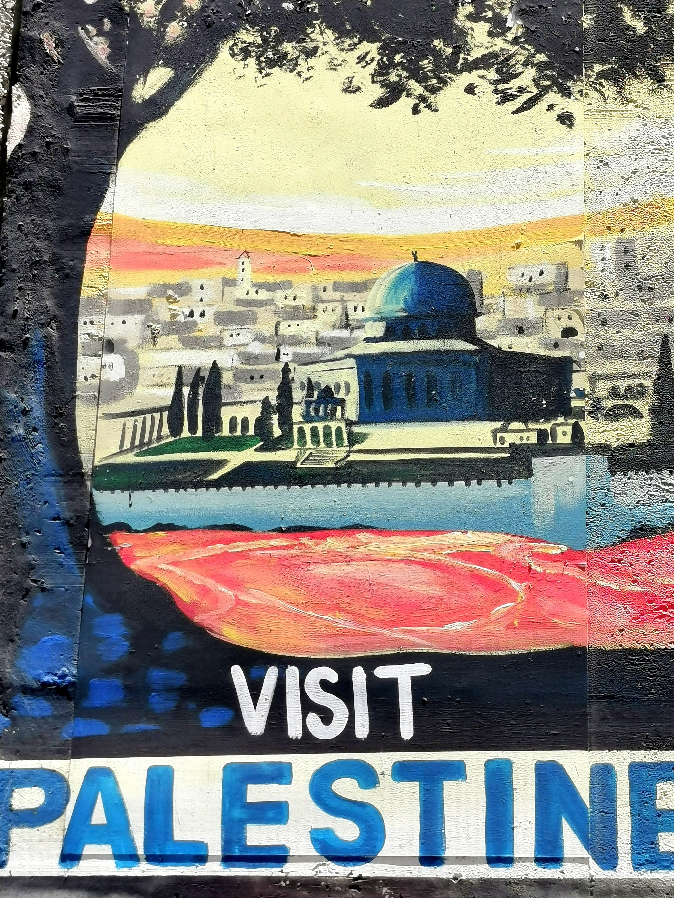

L'importance de la palestine en Islam
Wala Smirani
March, 2020 11:21 am

L’excellence du Lieu où se situe la ville de Jérusalem est justifiée tout aussi bien du point de vue historique, que dans de nombreux textes du Coran et de la sunna (tradition prophétique). Cette excellence remonte sans doute à l’antiquité, puisque c’est dans ce lieu que grandirent et moururent bon nombre de prophètes. C’est là-bas que leur fut donnée l’inspiration et que se révélèrent à eux, de nombreux messages qui allaient déterminer les conséquences à venir de la plupart des événements de l’histoire antique.
La Palestine dans le Coran
1) Les textes coraniques soulignent le caractère sacré de cette terre et son rôle fondamental tout au long de l’histoire. La bénédiction dont elle jouit ne se réduit pas uniquement à la Mosquée Al-Aqsa, mais aussi à tous ses alentours. Dieu dit : « Gloire et pureté à Celui qui de nuit, fit voyager Son serviteur de la Mosquée sacrée « al-Haram » à la Mosquée « al-Aqsa » dont Nous avons béni l’alentour » (17 :1).
2) La terre sainte à laquelle fait allusion le Coran comprend toute la Palestine, Jérusalem incluse, connue autrefois sous le nom de « Ilia », ou terre sainte (ref Coran s5 v21). Le Coran donne à l’adjectif épithète saint ou sacré non seulement le sens d’exaltation, bénédiction, grand intérêt, mais également de lieu de pureté spirituelle.
3) Les passages coraniques qui racontent l’émigration d’Abraham sont nombreux, depuis la terre des chaldéens en Irak jusqu’au « sham »[1] (voir Al –Anbiya « 71 »). Ces passages racontent comment Dieu sauva Abraham du bucher et lui ordonna d’émigrer vers le « sham » où se trouve la terre sainte. Selon la version de Qataadah, Abraham se trouvait en Irak et Dieu le sauva en l’envoyant au sham. On disait à cette époque du sham qu’elle serait la terre de la Congrégation et la Résurrection des hommes, que Jésus Christ y ressusciterait et l’Antéchrist y mourrait.
4) Grand nombres d’exégètes du Coran, s’accordent à penser que la terre bénie citée dans le verset : « Et nous avons soumis à Salomon le vent impétueux qui, par son ordre, se dirigea vers la terre que Nous avons bénie » (AL-Anbiya, 81) est celle du sham. Les historiens ont également tenté de déterminer les frontières de l’ancienne Syrie. Certains les étendirent depuis la Turquie au nord, jusqu’à la péninsule arabique, Irak inclus. D’autres les réduisirent à la Palestine et sa périphérie. Quoiqu’il en soit, et conformément à ce que pensent tous les historiens et érudits, il faut situer la ville de Jérusalem à l’intérieur du grand territoire Syrien (sham).
5) L’allusion du Coran au changement de la Qibla, de Jérusalem à la Mecque (Al-Baqara, 144), ou plus précisément de Al-Masjid al-Aqsa (La Mosquée Sacrée de Jérusalem) à Masjid al-Haram (La Mosquée sacrée de la Mecque), a été mentionnée dans de nombreux hadiths. Ceci signifie que l’orientation vers Jérusalem dura près de quatorze mois. Tout au long de cette période, le prophète multiplia ses prières à Dieu afin que celui-ci le réoriente vers la Kaaba, la qibla d’Abraham. Dieu entendit ses prières et lui ordonna de se diriger vers l’ancienne demeure.
On dit que la première prière récitée en direction de la nouvelle Qibla fut celle d’Al-Asr (l’après-midi), comme l’évoquent les deux recueilles authentiques (d’al-Boukhari et de Mouslim). Plus d’un exégète affirma que la réorientation du Qibla fut révélée au Prophète (BDSL) au beau milieu de la prière de midi dans la Mosquée de Bani Salmah, qui devint alors Masjid Al-Qiblatayn (la mosquée des deux Qibla qui fut la première construite à Medine). Quant aux gens de Qoba, la nouvelle ne leur parvint qu’à la prière de l’aurore du lendemain comme en témoigne les deux recueilles authentiques. On dit que la première prière récitée en direction de la nouvelle Qibla fut celle d’Al-Asr (l’après-midi), comme l’évoquent les deux recueilles authentiques (d’al-Boukhari et de Mouslim). Plus d’un exégète affirma que la réorientation du Qibla fut révélée au Prophète (BDSL) au beau milieu de la prière de midi dans la Mosquée de Bani Salmah, qui devint alors Masjid Al-Qiblatayn (la mosquée des deux Qibla qui fut la première construite à Medine). Quant aux gens de Qoba, la nouvelle ne leur parvint qu’à la prière de l’aurore du lendemain comme en témoigne les deux recueilles authentiques.
6) Il convient de rappeler que de nombreux versets coraniques mettent en évidence l’excellence de la terre sainte et de ses environs dans différents chapitres du Coran. L’insistance sur la direction de la prière vers Jérusalem avant que celle-ci n’ait été changée, montre la transcendance et le caractère sacré dont jouissait cette ville.
La Palestine dans le SunnaLe Prophète (BDSL), pour sa part, fit souvent allusion à l’excellence de la terre sainte. Il dit : « Les lieux dignes de faire l’objet de pèlerinages sont : Al-Masjid al-Haram (la Mosquée sacrée de la Mecque), ma mosquée (d’Al-Medina) et Al-Masjid al-Aqsa (La mosquée sacrée de Jérusalem). »
1) La tradition établit que la récompense due au culte dans les trois mosquées dépend du rang de chacune d’entre elles. Une prière dans la grande Mosquée de la Mecque équivaut à cent milles prières. Dans la Mosquée du Prophète (BDSL), une prière équivaut à mille prières et dans la Mosquée de Jérusalem à cinq cent. Ainsi, Dieu plaça celle-ci en troisième position et multiplia les récompenses divines.
2) La Mosquée de Jérusalem fut le deuxième lieu de culte construit sur cette terre après la Mosquée sacrée de la Mecque.
3) Zayd ibn Thabit raconte qu’il entendit le Prophète dire : « Béni est le sham… Béni est le sham! » Ils lui demandèrent alors pourquoi il louait tant le sham ? Il répondit : « Car les anges ont déployé leurs ailes sur le sham. »
4) Al-Bukhari et Muslim rapportent les paroles d’Al-Baraa’ ibn ‘Azib qui dit : « Avec le Prophète (BDSL), nous priâmes en direction de Jérusalem durant seize ou dix-sept mois, puis nous nous tournâmes vers La Mecque. »
5) Jérusalem fut la destination finale du voyage nocturne du Prophète (BDSL) et le point de départ de son ascension au ciel.
6) Dans ses invocations à Dieu, Moise exalta Jérusalem et la terre sainte, demandant à Dieu sur son lit de mort, qu’il voulut bien l’en rapprocher.
7) Nombreux sont les hadiths du Prophète (BDSL) qui implorent la bénédiction du sham.
8) Ahmad et At-Tirmidhi rapportent que Salim ibn ‘Abdillah entendit le Prophète dire : « Un feu surgira de Hadramawt, les portes de l’enfer s’ouvriront à la fin des temps et tous les gens se rassembleront. » Nous dimes : « Messager de Dieu que nous ordonnes-tu alors ? » Il nous répondit : « Rendez-vous au sham ».
9) De nombreux exégètes et érudits, parmi lesquels Al-Qurtubi et Ibn al-Juzi, interpètent le verset : « Et sois à l’écoute, le jour le crieur criera d’un endroit proche. » (50 :41) en disant qu’il s’agit d’Israfil, debout sur le rocher de Jérusalem d’où le Prophète (BDSL) fit son ascension, appelant les gens à assister au jugement dernier. C’est là que devra commencer la résurrection des morts.
L’Imam Ahmad rapporte dans son recueil que Maïmunah, épouse du Prophète (BDSL) dit : « Ô Messager de Dieu ! Notre fin est elle à Jérusalem ? » Le Prophète (BDSL) répondit : « Terre de la résurrection des morts et de leur Rassemblement. » Certains musulmans exagèrent en vénérant le Rocher. La vénération de celui-ci, comme le mentionne Ibn Taymiyah, est considérée comme une innovation car il n’existe aucun texte justifiant sa sacralisation. Certaines personnes pensent même que le rocher est suspendu dans les airs alors qu’il n’en est rien. En réalité, il existe une grotte sous celui-ci, et lorsqu’une personne y pénètre, elle a l’impression de voir le rocher suspendu.
10) De nombreux compagnons du Prophète (BDSL) visitèrent Jérusalem. Ils prièrent dans son enceinte répondant ainsi à l’appel que fit Muhammad à cet effet. Parmi ceux qui visitèrent Jérusalem, se trouvent les Compagnons : Umar Ibn Al-Khattab, Abu ‘Ubaydah ‘Amir Ibn al-Jarrah, la mère des croyants et épouse du Prophète Safia Bint Hayiy, Mu’adh Ibn Jabal, Abdullah Ibn Omar, Khalid Ibn al Walid, Abu Dharr al-Ghifari, Abu ad-Dardaa, Salman Al-Farissi, Amr Ibn al-‘As et Said Ibn Zayd …
Extrait du livre « Palestine hier, aujourd’hui et demain » de Dr Tareq Suwaidan